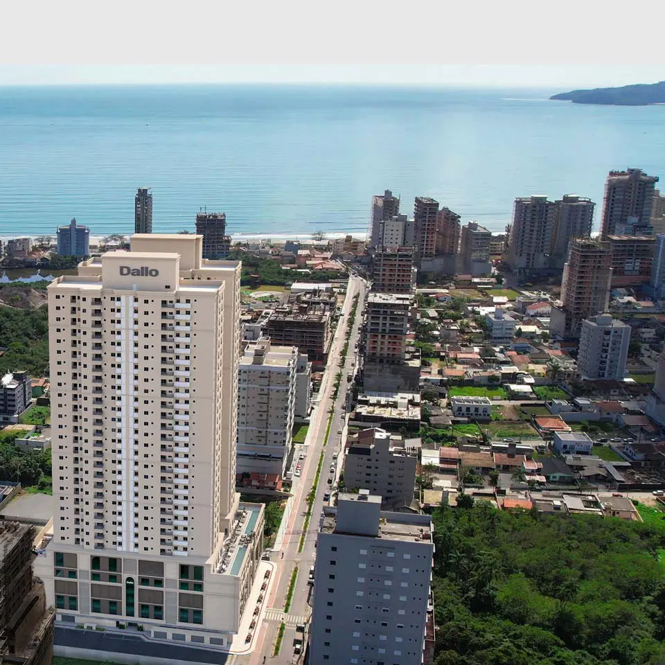
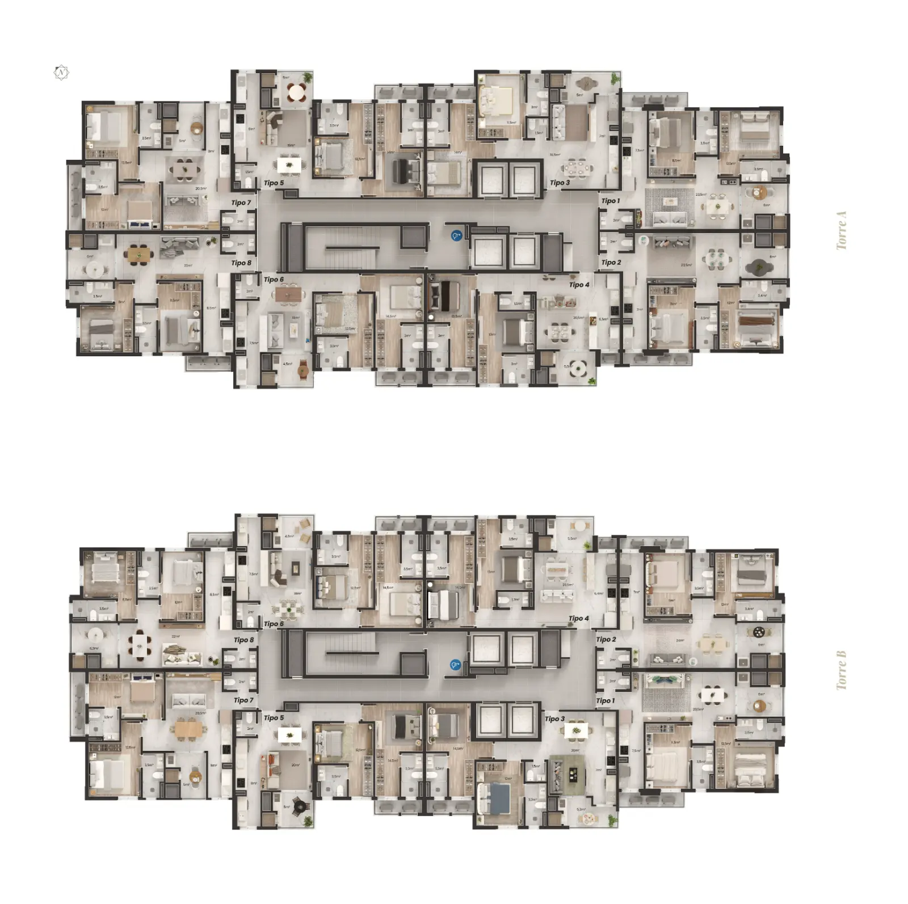

Jardim Molière
- Suítes
- 2 suítes
- Metragem
- 80m²
- Vagas
- 2 vagas
- Andares
- 30
Inspirado no encanto dos clássicos teatros franceses, o Dallo Jardim Molière é composto por 2 torres de 30 andares, 8 diferentes plantas e mais de 3 mil metros de área de lazer. Uma obra com mais de 58 mil metros quadrados de puro encanto em uma localização privilegiada numa das praias mais desejadas do litoral catarinense.
Inspirado no encanto dos clássicos teatros franceses, o Dallo Jardim Molière é composto por 2 torres de 30 andares, 8 diferentes plantas e mais de 3 mil metros de área de lazer.
Uma obra com mais de 58 mil metros quadrados de puro encanto em uma localização privilegiada numa das praias mais desejadas do litoral catarinense.
3.040m² de lazer: exclusivo para cada momento
O lazer do Jardim Molière une conforto e praticidade em cada detalhe, com áreas exclusivas como piscinas, spas, quatro salões de festas, quadras, academias e muito mais em seus 3.040m².
Os apartamentos
Cada planta do Jardim Molière foi planejada para oferecer um ambiente harmonioso e sofisticado, perfeito para diversos estilos de vida.
Localização que faz a diferença
A apenas 600 metros do mar em Porto Belo, o Jardim Molière está em uma das áreas mais promissoras do litoral catarinense, onde natureza e infraestrutura completa se encontram.

Plantas

Tipo 1 - 83m² priv. e 138m² total · Tipo 2 - 82m² priv. e 136m² total · Tipo 3 - 81m² priv. e 134m² total · Tipo 4 - 82m² priv. e 137m² total · Tipo 5 - 82m² priv. e 137m² total · Tipo 6 - 80m² priv. e 134m² total · Tipo 7 - 80m² priv. e 133m² total · Tipo 8 - 82m² priv. e 137m² total · 2 suítes • 2 vagas

04 Salões de festa com acesso ao terraço 1 · 02 Brinquedotecas · 02 Salas de jogos · 02 Games rooms · 04 áreas gourmets com acesso ao terraço 2 · Fitness Center com acesso ao terraço 3 · Personal care e sala de massagem · Spa · Ante sauna · Sauna seca · Sauna úmida · Pet care · 02 piscinas adulto · Piscina infantil · Lounges da piscina · Fire place · Playground · Quadra · Espaço cross · Espaço yoga · Pet park
A obra
Início de obra: Outubro de 2024 • Entrega em: Dezembro de 2031
Registro de Incorporação: R-11/M-44.101.